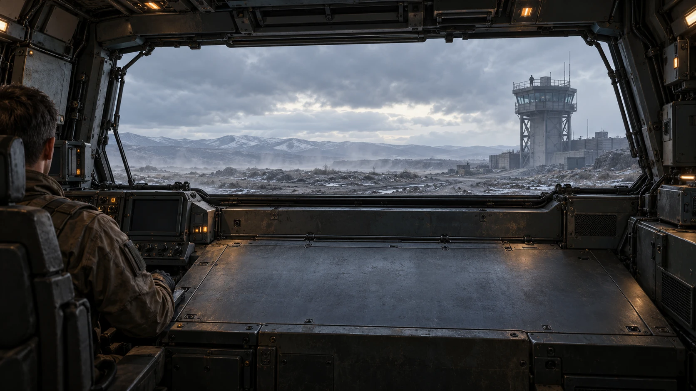
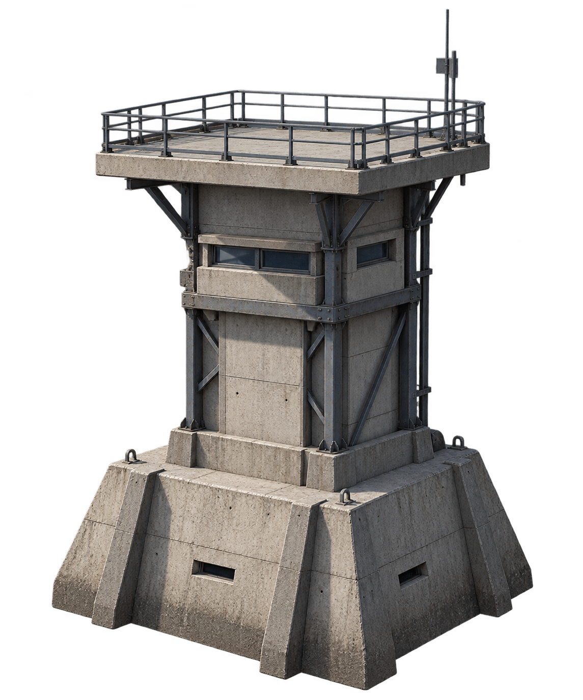
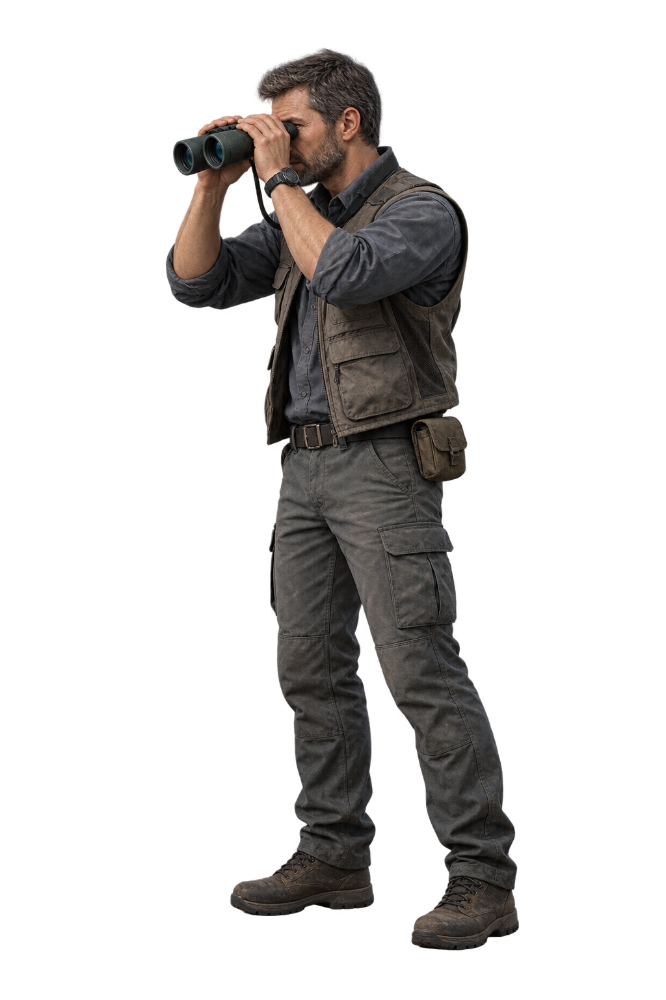

MISSION BRIEF
面试 = 能力证据交换同一辆坦克，三种观察位置。
任务 001 求职能力系统
求职战车OFFER TANK
求职不是盲目冲锋，
而是把经历组装成
能被验证的火力系统。
从求职者、面试官与全景结果三个视角，
复盘双向模拟面试中的问题、验证与成长闭环。

驾驶控制舱证据链管理系统 · 安全检修模式
◉OFFER TOWER
前向视窗 · 目标观测驾驶位 · 求职者
证据链系统 · 故障诊断中控依次处理四项系统报错
系统已恢复 · 目标已锁定
双筒观察镜 · 目标承压校验侦察终端 / 同一组能力，再验证一次

校验链路等待手动启动
四项承压校验已完成
校验完成
目标校验完成，允许进入实战验证。


录用目标塔
● 证据链已校准 · 等待手动发射
系统就绪 · 准备真实验证
用可验证的证据，接受真实面试检验。
战果确认 · 目标已命中
OFFER ACQUIRED
准备完成，继续在真实世界验证。
证据已就绪
战后复盘报告
战后复盘
证据闭环经历证据库追问预演面试Gap补证据
经历 → 证据库 → 追问预演 → 面试 → Gap → 补证据 → 下一轮
每一次面试，
都成为下一次面试的证据来源。
一次面试不会结束系统。